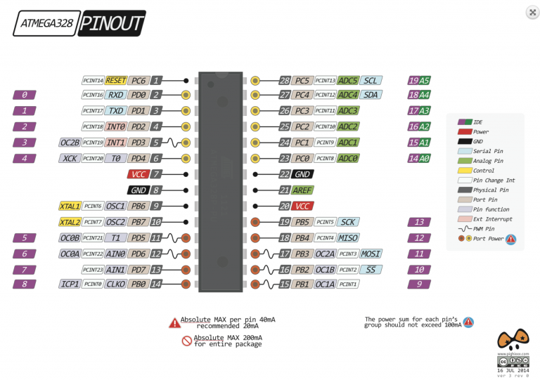
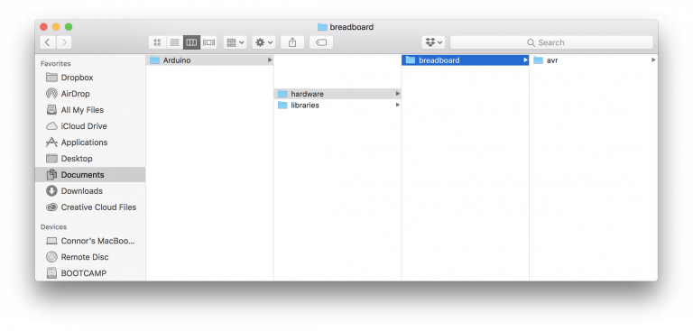
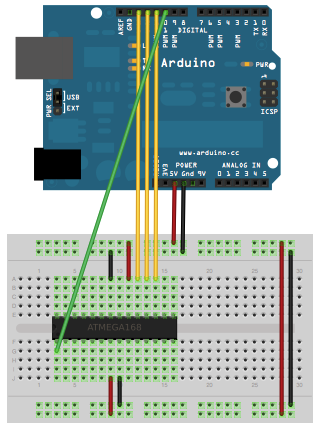
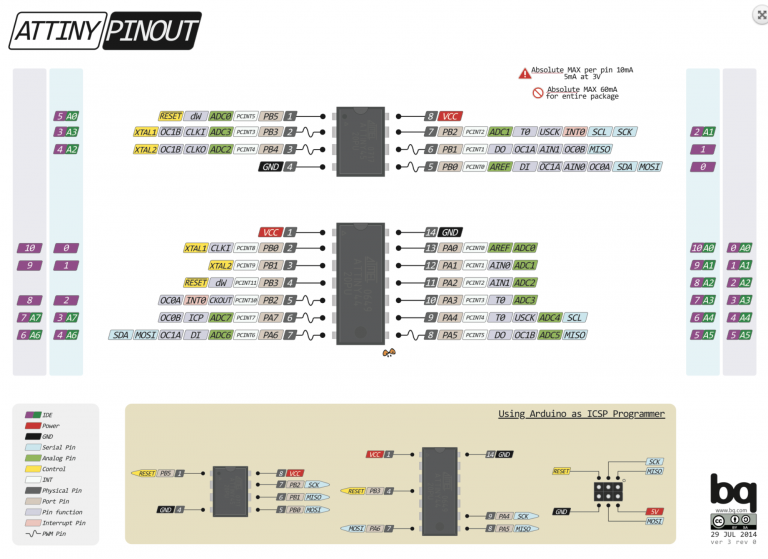
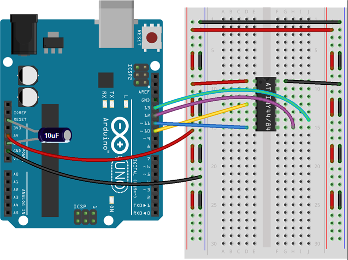

This is meant to be a compendium of programming guides for a series of useful Atmel chips.
Diagram of the Arduino Uno, which will be used to program each of these chips:
ATmega328P
Diagram: 
One time: burning the bootloader
Connect an unwired Arduino to the computer.
Set Tools/Board to “Arduino/Genuino Uno” and upload the example ArduinoISP sketch.
In Documents/Arduino, create a new folder called “hardware”.
Download breadboard-1.6.zip and unzip it in the hardware folder. The final directory tree should look like this:
Arduino IDE hardware folder structure
Restart the Arduino IDE.
Wire the devices as shown.
ATmega328P on a breadboard bootloader configuration
Connect a 10 µF capacitor from reset to ground on the Arduino.
Set Tools/Board to “ATmega328 on a breadboard (8MHz internal)”.
Set Tools/Programmer to “Arduino as ISP”
Click Tools/Burn Bootloader.
Post the error it gives you in the comments below. (hopefully none)
Every time: uploading sketches
Set Tools/Board to “ATmega328 on a breadboard (8MHz internal)”.
Set Tools/Programmer to “Arduino/Genuino Uno”
Wire the device like shown.
ATmega328P on a breadboard programming configuration
Press the upload button.
ATmega328 (without the P)
Seriously consider buying a regular ATmega328P unless this is all they have at your local electronics store.
One time: burning the bootloader
Follow the same instructions as for ATmega328P, but after step 3 edit “boards.txt” within Arduino/hardware/breadboard/avr. Find the line that reads “atmega328bb.build.mcu=atmega328p” and change atmega328p to atmega328. After step 9, revert this change (the bootloader causes the chip to respond in the same way as a ATmega328P).
Every time: uploading sketches
Same instructions as for ATmega328P
ATtiny84 (14-pin DIP)
No bootloader is required.
Diagram: 
Uploading sketches:
Connect an unwired Arduino to the computer.
Set Tools/Board to “Arduino/Genuino Uno” and upload the example ArduinoISP sketch.
Open Arduino’s preferences. In Additional Boards Manager URLs, insert https://raw.githubusercontent.com/damellis/attiny/ide-1.6.x-boards-manager/package_damellis_attiny_index.json and press OK.
Go to Tools/Boards/Boards Manager. Search for attiny. Click the first result and press Install.
Restart the Arduino IDE.
Wire the board as follows.
ATtiny84 on a breadboard programming configuration
Set Tools/Board to ATtiny24/44/84
Set Tools/Processer to ATtiny84
Set Tools/Clock to 1MHz
Set Tools/Programmer to Arduino as ISP.
Click Sketch/Upload using Programmer.
ATtiny85 (8-pin DIP)
No bootloader is required.
Uploading sketches:
Follow the instructions for the ATtiny84. For step 6, wire the board as follows:
ATtiny85 on a breadboard programming configuration
For step 7, select ATtiny25/45/85. For step 8, select ATtiny85.